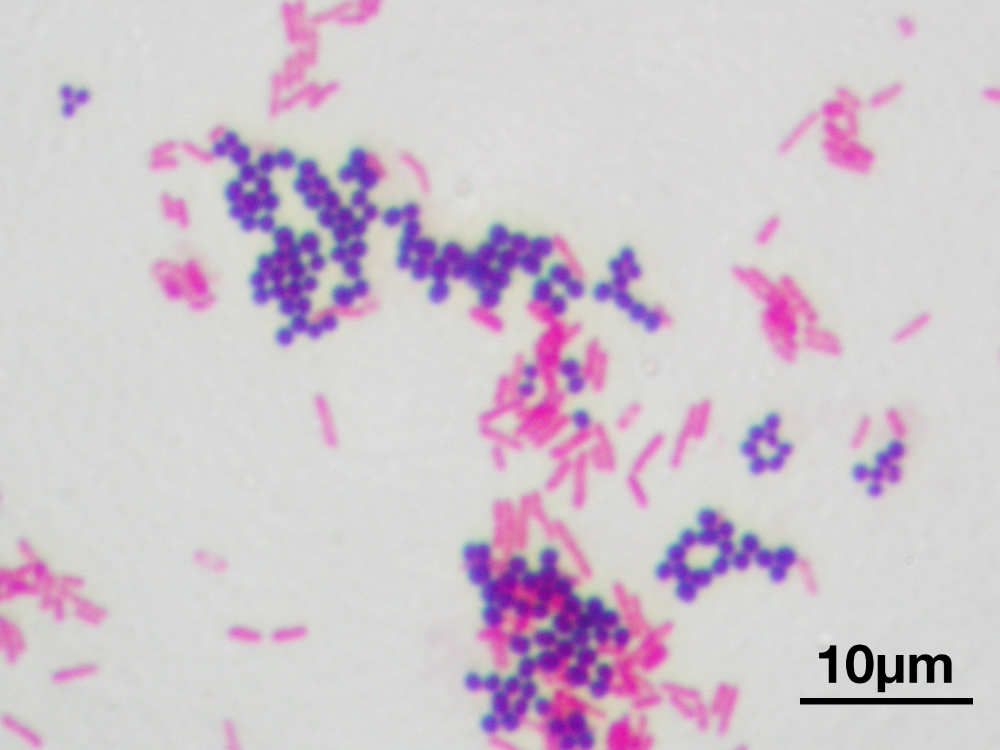

import pandas as pd
import altair as altVisualization (Scales and Guides)
Intro
roadmap
- define scales and guides
- load and explain dataset
(no summary at end because slides are self-contained)
scales and guides
“Visual encoding mapping data to visual variables such as position, size, shape, or color is the beating heart of data visualization.”
Two steps:
- scale: a function that takes a data value as input (the scale domain) and returns a visual value, such as a pixel position or RGB color, as output (the scale range).
- guide: that allow readers to decode the graphic. Two types:
- axes which visualize scales with spatial ranges
- legends which visualize scales with color, size, or shape ranges
Dataset for this lecture
- Each row: a type of bacteria
- Each column: a type of antibiotic
- Each value: minimum inhibitory concentration (MIC) the concentration of antibiotic (in micrograms per milliliter) required to prevent growth in vitro. Lower values means antibiotic is more effective
- There are two other columns with the genus of the bacteria and the response to a lab procedure called “gram staining”. We will come back to these later.
- Discussion questions: 1) are these data “tidy”? 2) if no, how would you tidy them?
Research questions
- How does effective is neomycin against different types of bacteria?
- How does neomycin compare to other antibiotics, such as streptomycin and penicillin?
- For which types of bacteria are neomycin and penicillin effective?
antibiotics = 'https://cdn.jsdelivr.net/npm/vega-datasets@1/data/burtin.json'
pd.read_json(antibiotics)antibiotics[['Bacteria', 'Penicillin', 'Streptomycin', 'Neomycin']].head()| Bacteria | Penicillin | Streptomycin | Neomycin | |
|---|---|---|---|---|
| 0 | Aerobacter aerogenes | 870.000 | 1.00 | 1.600 |
| 1 | Bacillus anthracis | 0.001 | 0.01 | 0.007 |
| 2 | Brucella abortus | 1.000 | 2.00 | 0.020 |
| 3 | Diplococcus pneumoniae | 0.005 | 11.00 | 10.000 |
| 4 | Escherichia coli | 100.000 | 0.40 | 0.100 |
Configuring Scales and Axes
Configuring Scales and Axes: roadmap
- manipulate
alt.Scale() - clarify the meaning implied by an axis
- change the length (
domain) of an axis - change grid lines via
alt.Axis()
Plotting Antibiotic Resistance: Adjusting the Scale Type
Default scale is linear
alt.Chart(antibiotics).mark_circle().encode(
alt.X('Neomycin:Q')
)Why is this plot hard to read?
NOTES: solution: all the points are clustered at the bottom
alt scale I
alt.Chart(antibiotics).mark_circle().encode(
alt.X('Neomycin:Q',
scale=alt.Scale(type='sqrt'))
)alt scale II
alt.Chart(antibiotics).mark_circle().encode(
alt.X('Neomycin:Q',
scale=alt.Scale(type='log'))
)What does this plot do well? What is confusing about it?
NOTES: *solution: does well: gives a broad sense of scale
does poorly: The hashes between units of base 10 are not equally spaced and therefore pretty hard to read. It seems like they are trying to capture equally divided units (e.g. 1, 2, 3, 4, 5…). But even this is not correct! I think there are only 7 dashes between each value, like 1 and 10. So that suggests that there is something more complicated going on. My best guess is that it choose to suppress dashes 8 and 9, but this is pretty confusing for a reader…*
Styling an Axis
- Lower dosages indicate higher effectiveness. However, many readers will expect values that are “better” to be “up and to the right” within a chart.
- If we want to cater to this convention set the encoding
sortproperty to'descending':
alt.Chart(antibiotics).mark_circle().encode(
alt.X('Neomycin:Q',
sort='descending',
scale=alt.Scale(type='log'))
)add a clarifying title
alt.Chart(antibiotics).mark_circle().encode(
alt.X('Neomycin:Q',
sort='descending',
scale=alt.Scale(type='log'),
title='← Less effective --- Neomycin MIC (μg/ml) --- more effective →')
)Editorial remark: the textbook suggests a title of “Neomycin MIC (μg/ml, reverse log scale)”. This is accurate, but I don’t know it helps the reader that much.
- The fact that it is a log scale is self-evident. So is the fact that it is reversed.
- What the reader really wants to know is which direction is “good”. Just tell them that directly.
Comparing Antibiotics: Adjusting Grid Lines, Tick Counts, and Sizing
How does neomycin compare to streptomycin?
Question for the class: what does each point repesent?
NOTES: solution: Each point is 1 bacteria strain, and we’re plotting two of the bacteria’s properties against each other.
alt.Chart(antibiotics).mark_circle().encode(
alt.X('Neomycin:Q',
sort='descending',
scale=alt.Scale(type='log'),
title='← Less effective --- Neomycin MIC (μg/ml) --- more effective →'),
alt.Y('Streptomycin:Q',
sort='descending',
scale=alt.Scale(type='log'),
title='← Less effective --- Streptomycin MIC (μg/ml) --- more effective →')
)Bacteria responds similarly to these two antibiotics
How does neomycin compare to penicillin?
alt.Chart(antibiotics).mark_circle().encode(
alt.X('Neomycin:Q',
sort='descending',
scale=alt.Scale(type='log'),
title='← Less effective --- Neomycin MIC (μg/ml) --- more effective →'),
alt.Y('Penicillin:Q',
sort='descending',
scale=alt.Scale(type='log'),
title='← Less effective --- Penicillin MIC (μg/ml) --- more effective →')
)Now we see a more differentiated response: some bacteria respond well to neomycin but not penicillin, and vice versa!
fix domain, equalize aspect ratio
While this plot is useful, we can make it better. The x and y axes use the same units, but have different extents (the chart width is larger than the height) and different domains (0.001 to 100 for the x-axis, and 0.001 to 1,000 for the y-axis).
alt.Chart(antibiotics).mark_circle().encode(
alt.X('Neomycin:Q',
sort='descending',
scale=alt.Scale(type='log', domain=[0.001, 1000]),
title='← Less effective --- Neomycin MIC (μg/ml) --- more effective →'),
alt.Y('Penicillin:Q',
sort='descending',
scale=alt.Scale(type='log', domain=[0.001, 1000]),
title='← Less effective --- Penicillin MIC (μg/ml) --- more effective →')
).properties(width=250, height=250)reduce grid clutter with alt.Axis(tickCount=5)
Also set mark_circle(size=80)
alt.Chart(antibiotics).mark_circle(size=80).encode(
alt.X('Neomycin:Q',
sort='descending',
scale=alt.Scale(type='log', domain=[0.001, 1000]),
axis=alt.Axis(tickCount=5),
title='← Less effective --- Neomycin MIC (μg/ml) --- more effective →'),
alt.Y('Penicillin:Q',
sort='descending',
scale=alt.Scale(type='log', domain=[0.001, 1000]),
axis=alt.Axis(tickCount=5),
title='← Less effective --- Penicillin MIC (μg/ml) --- more effective →')
).properties(width=250, height=250)Discussion questions: 1) What questions does this plot answer? 2) What further questions does this plot raise?
NOTES: solution Answers: 1) some bacteria respond well to neomycin but not penicillin, and vice versa! 2) for what types of bacteria is N effective or P effective? Need some way to dig deeper. This is what we will do in the remainder of the lecture
Configuring Scales and Axes: summary
How to make your axes and grids as informative as possible
- Choose an
alt.Scale()that reveals differences between the data (in most cases…) - Axis titles should clarify meaning
- Deliberately choose axis length via
domainargument - Reduce grid clutter via
alt.Axis()
Configuring Color Legends
Configuring Color Legends: roadmap and warning
- Visualization as a tool for discovery
alt.Color()in legends- binary variable
- text data (every dot is different)
- groups
- use color to encode quantitative values
Remarks:
- This section of the textbook asks you to practice your “skepticism” muscle. What we mean by that is that it is mostly about showing what does not work. we will follow the textbook, but for many of the plots, your first question should not be “where would I want to use this tool?” but rather “why is this not a good idea?”
- The official title of this section of lecture is about color legends, but the deeper lessons are about how to clean data to uncover and communciate structure
Visualization as a tool for discovery
- Above we saw that neomycin is more effective for some bacteria, while penicillin is more effective for others.
- Is there any systematic answer to what types of bacteria each drug is more effective for? This is the kind of question for which data visualization shines.
- If we just stared at a table in Excel or Pandas, it might be hard to see patterns (and at the very least it would take awhile). Until now, almost everything we have seen for data visualization has been about communication. Now, we are going to see how data visualization can be a tool for discovery.
Gram staining
Let’s start by looking at one of the other columns in the data frame (which we have ignored until now).
A tiny bit of science: the reaction of the bacteria to a procedure called Gram staining is described by the nominal field Gram_Staining. Bacteria that turn dark blue or violet are Gram-positive. Otherwise, they are Gram-negative.

antibiotics[['Gram_Staining']].tail()| Gram_Staining | |
|---|---|
| 11 | positive |
| 12 | positive |
| 13 | positive |
| 14 | positive |
| 15 | positive |
alt.Color(‘Gram_Staining:N’)
Let’s encode Gram_Staining on the color channel as a nominal data type:
alt.Chart(antibiotics).mark_circle(size=80).encode(
alt.X('Neomycin:Q',
sort='descending',
scale=alt.Scale(type='log', domain=[0.001, 1000]),
axis=alt.Axis(tickCount=5),
title='← Less effective --- Neomycin MIC (μg/ml) --- more effective →'),
alt.Y('Penicillin:Q',
sort='descending',
scale=alt.Scale(type='log', domain=[0.001, 1000]),
axis=alt.Axis(tickCount=5),
title='← Less effective --- Penicillin MIC (μg/ml) --- more effective →'),
alt.Color('Gram_Staining:N')
).properties(width=250, height=250)We can see that Gram-positive bacteria seem most susceptible to penicillin, whereas neomycin is more effective for Gram-negative bacteria!
Sometimes helpful trick: choose colors with external meaning
However, we might wish to customize the colors used. In this case, we might want to use the colors that come out in lab when you do gram staining. Let’s use those colors by specifying an explicit scale mapping from the data domain to the color range:
alt.Chart(antibiotics).mark_circle(size=80).encode(
alt.X('Neomycin:Q',
sort='descending',
scale=alt.Scale(type='log', domain=[0.001, 1000]),
axis=alt.Axis(tickCount=5),
title='← Less effective --- Neomycin MIC (μg/ml) --- more effective →'),
alt.Y('Penicillin:Q',
sort='descending',
scale=alt.Scale(type='log', domain=[0.001, 1000]),
axis=alt.Axis(tickCount=5),
title='← Less effective --- Penicillin MIC (μg/ml) --- more effective →'),
alt.Color('Gram_Staining:N',
scale=alt.Scale(domain=['negative', 'positive'], range=['hotpink', 'purple'])
)
).properties(width=250, height=250)Color by Species I
alt.Chart(antibiotics).mark_circle(size=80).encode(
alt.X('Neomycin:Q',
sort='descending',
scale=alt.Scale(type='log', domain=[0.001, 1000]),
axis=alt.Axis(tickCount=5),
title='← Less effective --- Neomycin MIC (μg/ml) --- more effective →'),
alt.Y('Penicillin:Q',
sort='descending',
scale=alt.Scale(type='log', domain=[0.001, 1000]),
axis=alt.Axis(tickCount=5),
title='← Less effective --- Penicillin MIC (μg/ml) --- more effective →'),
alt.Color('Bacteria:N')
).properties(width=250, height=250)Discussion question: what’s wrong with this plot? ::: {.notes .content-visible when-profile=“speaker”} NOTES: solution colors get reused because there are more than 10 legend items :::
Color by Species II
Use tableau20 so we have 20 colors instead of 10
alt.Chart(antibiotics).mark_circle(size=80).encode(
alt.X('Neomycin:Q',
sort='descending',
scale=alt.Scale(type='log', domain=[0.001, 1000]),
axis=alt.Axis(tickCount=5),
title='← Less effective --- Neomycin MIC (μg/ml) --- more effective →'),
alt.Y('Penicillin:Q',
sort='descending',
scale=alt.Scale(type='log', domain=[0.001, 1000]),
axis=alt.Axis(tickCount=5),
title='← Less effective --- Penicillin MIC (μg/ml) --- more effective →'),
alt.Color('Bacteria:N',
scale=alt.Scale(scheme='tableau20'))
).properties(width=250, height=250)Problem with this plot: bacteria that are similar (all in the “staph” family) have very different colors
Color by Species III – color as O
alt.Chart(antibiotics).mark_circle(size=80).encode(
alt.X('Neomycin:Q',
sort='descending',
scale=alt.Scale(type='log', domain=[0.001, 1000]),
axis=alt.Axis(tickCount=5),
title='← Less effective --- Neomycin MIC (μg/ml) --- more effective →'),
alt.Y('Penicillin:Q',
sort='descending',
scale=alt.Scale(type='log', domain=[0.001, 1000]),
axis=alt.Axis(tickCount=5),
title='← Less effective --- Penicillin MIC (μg/ml) --- more effective →'),
alt.Color('Bacteria:O')
).properties(width=250, height=250)Problems with this plot:
- the blue shades are hard to distinguish from one another.
- although it is nice to assign similar colors to bacteria in the same family, this legend also assigns similar colors to bacteria that are not in the same family
A partial solution to (1) is to use a different color scheme
Color by Species IV – use viridis
This scheme increases both hue and luminance
alt.Chart(antibiotics).mark_circle(size=80).encode(
alt.X('Neomycin:Q',
sort='descending',
scale=alt.Scale(type='log', domain=[0.001, 1000]),
axis=alt.Axis(tickCount=5),
title='← Less effective --- Neomycin MIC (μg/ml) --- more effective →'),
alt.Y('Penicillin:Q',
sort='descending',
scale=alt.Scale(type='log', domain=[0.001, 1000]),
axis=alt.Axis(tickCount=5),
title='← Less effective --- Penicillin MIC (μg/ml) --- more effective →'),
alt.Color('Bacteria:O',
scale=alt.Scale(scheme='viridis'))
).properties(width=250, height=250)Discussion questions
Examples III and IV are jury-rigged to work nicely. They work because
- legend is ordered alphabetically
- bacteria family is at the beginning of the name of each strain.
Suppose instead that the family was instead at the end of the name
| bacteria name |
|---|
| Viridans, streptococcus |
| Hemolycticus, Streptococcus |
Let’s troubleshoot in real-time. How would you get the color scheme to align with family? There’s more than one good way to do this.
NOTES: solution 1) (less clever) manually assign colors to each strain by hand 2) (more clever) use string cleaning to move the family name to the front. 3) (not sure exactly how to do this in Python, but this is how I’d do it in Stata) assign each bacteria to a number, making sure bacteria in the same family are close to each other. Then just use the name as a label for the legend
Text Labels by Species
A more clear way to handle this is to use mark_text() to explicitly label each dot. However, that comes at the cost of adding a lot of chart clutter.
base = alt.Chart(antibiotics).mark_circle(size=80).encode(
alt.X('Penicillin:Q',
sort='descending',
scale=alt.Scale(type='log', domain=[0.001, 1000]),
axis=alt.Axis(tickCount=5),
title='← Less effective --- Penicillin MIC (μg/ml) --- more effective →'),
alt.Y('Streptomycin:Q',
scale=alt.Scale(type='log', domain=[0.001, 1000]),
axis=alt.Axis(tickCount=5),
title='Streptomycin MIC (μg/ml, reverse log scale)'),
alt.Color('Bacteria:N', legend=None)
).properties(width=250, height=250)
# Add text labels next to each dot
text = base.mark_text(
align='left',
baseline='middle',
dx=7, # Adjust the position of the text
dy=-5
).encode(
text='Bacteria:O'
)
# Combine the base chart with the text labels
chart = base + text
chartDiscussion question – What is another way we have seen to make it possible for the reader to see what each dot is labeled, but using less clutter?
NOTES: solution tool tip
Color by Genus I
Need to use transform_calculate() to extract Genus
alt.Chart(antibiotics).mark_circle(size=80).transform_calculate(
Genus='split(datum.Bacteria, " ")[0]'
).encode(
alt.X('Neomycin:Q',
sort='descending',
scale=alt.Scale(type='log', domain=[0.001, 1000]),
axis=alt.Axis(tickCount=5),
title='← Less effective --- Neomycin MIC (μg/ml) --- more effective →'),
alt.Y('Penicillin:Q',
sort='descending',
scale=alt.Scale(type='log', domain=[0.001, 1000]),
axis=alt.Axis(tickCount=5),
title='← Less effective --- Penicillin MIC (μg/ml) --- more effective →'),
alt.Color('Genus:N',
scale=alt.Scale(scheme='tableau20'))
).properties(width=250, height=250)Color by Genus II
Recode infrequent Genus values to “Other”.
alt.Chart(antibiotics).mark_circle(size=80).transform_calculate(
Split='split(datum.Bacteria, " ")[0]'
).transform_calculate(
Genus='indexof(["Salmonella", "Staphylococcus", "Streptococcus"], datum.Split) >= 0 ? datum.Split : "Other"'
).encode(
alt.X('Neomycin:Q',
sort='descending',
scale=alt.Scale(type='log', domain=[0.001, 1000]),
axis=alt.Axis(tickCount=5),
title='← Less effective --- Neomycin MIC (μg/ml) --- more effective →'),
alt.Y('Penicillin:Q',
sort='descending',
scale=alt.Scale(type='log', domain=[0.001, 1000]),
axis=alt.Axis(tickCount=5),
title='← Less effective --- Penicillin MIC (μg/ml) --- more effective →'),
alt.Color('Genus:N',
scale=alt.Scale(
domain=['Salmonella', 'Staphylococcus', 'Streptococcus', 'Other'],
range=['rgb(76,120,168)', 'rgb(84,162,75)', 'rgb(228,87,86)', 'rgb(121,112,110)']
))
).properties(width=250, height=250)Remark: the antibiotics dataset actually already comes with a column called Genus but the textbook recreates it in the code block above in order to show you how to add categories as part of a single code block in vega.
Color by Antibiotic Response I
alt.Chart(antibiotics).mark_rect().encode(
alt.Y('Bacteria:N',
sort=alt.EncodingSortField(field='Penicillin', op='max', order='descending')
),
alt.Color('Penicillin:Q')
)Color by Antibiotic Response II
Cosmetic improvements:
- add plot title
- format
alt.Y(... alt.Axis()) - format
alt.Colorwithplasmacolor scheme, legend edits
alt.Chart(antibiotics, title='Penicillin Resistance of Bacterial Strains').mark_rect().encode(
alt.Y('Bacteria:N',
sort=alt.EncodingSortField(field='Penicillin', op='max', order='descending'),
axis=alt.Axis(
orient='right', # orient axis on right side of chart
titleX=7, # set x-position to 7 pixels right of chart
titleY=-2, # set y-position to 2 pixels above chart
titleAlign='left', # use left-aligned text
titleAngle=0 # undo default title rotation
)
),
alt.Color('Penicillin:Q',
scale=alt.Scale(type='log', scheme='plasma', nice=True),
legend=alt.Legend(titleOrient='right', tickCount=5),
title='Penicillin MIC (μg/ml)'
)
).configure_title(
anchor='start', # anchor and left-align title
offset=5 # set title offset from chart
)Configuring Color Legends: summary
- Overarching idea: visualization as a tool for discovery
- Avoid
- Too many groups in a legend
- Colors that are too similar for groups that are actually dissimilar (e.g. when the underlying variable is
Nominal)
- Strive to
- Choose colors with external meaning (e.g. gram staining)
- Construct categorical variables (e.g.
Genus) - If you must have many categories, put annotation directly next to dots or create an interactive plot with a tooltip.
- Choose colors that are easy to discern (e.g.
viridis,plasma)